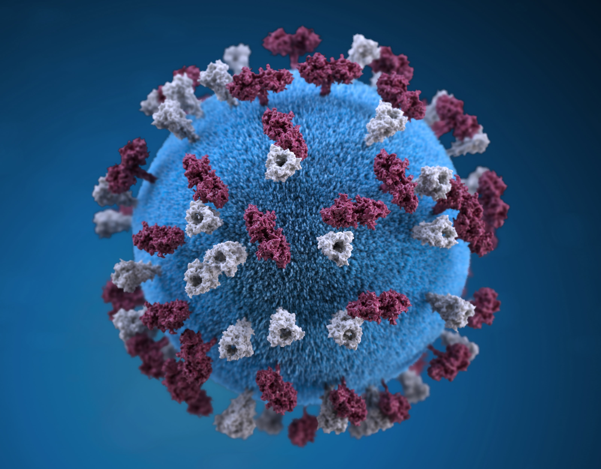

- 병원체
- 전염
- 증상
병원체
코로나바이러스감염증-19(코로나19)의 병원체는 ‘사스-코로나바이러스-2(SARS-CoV-2)’이다. 국제바이러스분류위원회(ICTV)는 2020년 2월 11일 코로나19의 병원체에 SARS-CoV-2라는 이름을 제안한 논문을 발표했는데, 위원회는 이 바이러스가 2003년 유행한 사스(SARS, 중증급성호흡기증후군)와 비슷하다는 점을 강조한 것이라고 밝혔다.
한편, 세계보건기구(WHO)는 코로나19 바이러스를 유전자와 해당 유전자가 만드는 단백질에서의 아미노산 종류에 따라 기존 S, V, G 등 3개 그룹(clade)으로 분류했다. 여기에 WHO가 운영하는 유전자 정보사이트(GISAID)는 약 3만 개에 이르는 사스코로나바이러스-2(SARS-CoV-2)의 게놈 염기서열 중 9개를 ‘마커(표지)’로 삼고, 이 염기서열의 종류 조합을 기반으로 하여 S, V, L, G, GH, GR, 기타 등 7개로 코로나19 바이러스를 분류하고 있다. GISAID는 2019년 말 중국 우한에서 처음 등장한 것으로 추정되는 SARS-CoV-2 중 하나를 ‘L’로 분류하고 참고 기준으로 삼았다. 이후 염기서열의 변화에 따라 S와 V가 등장했으며, 2020년 2월에는 G그룹이 등장했다. 그런데 이후 G그룹의 비중이 점차 증가하면서 GH와 GR로 세분화됐다.
코로나19 유행 초기에는 중국을 포함한 아시아 지역에서 주로 S, V 그룹이 확인됐는데, 국내에서도 코로나19 발생 초기 중국 우한 교민 등으로부터 유입된 바이러스는 S그룹, 신천지 대구교회 중심으로 확산되던 것은 V그룹이었다. 이후 유럽, 북미, 남미 등 전 세계로 확산되면서부터는 G, GR, GH 그룹이 주로 유행하고 있다. G유형은 614번째 아미노산이 아스파트산(D)에서 글리신(G)으로 바뀌는 변이가 일어난 것으로, 국내 질병관리본부에서도 2020년 5월 서울 이태원 클럽을 중심으로 집단감염이 발생한 이후에 유행한 코로나19 바이러스의 대부분을 GH 유형이라고 설명하고 있다.
[네이버 지식백과] 코로나바이러스감염증-19 - (COVID-19) (시사상식사전, pmg 지식엔진연구소)
